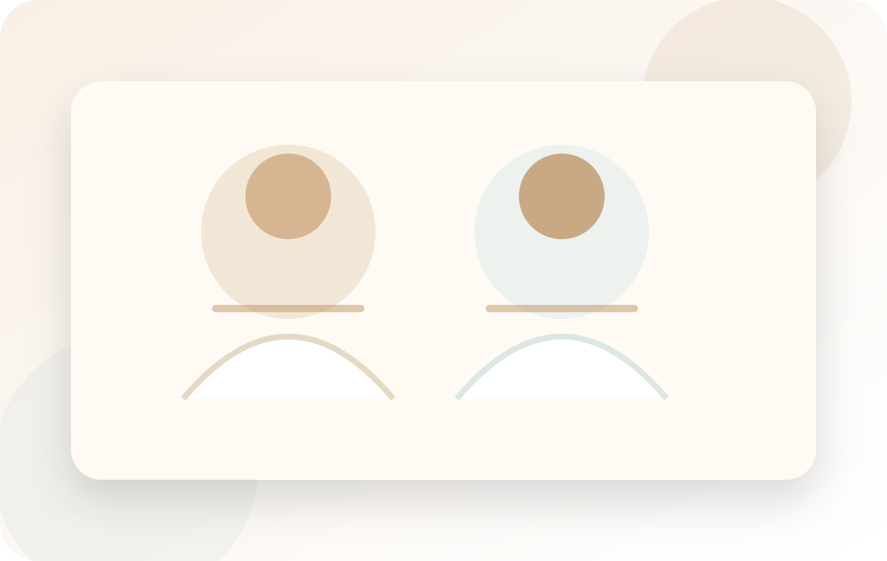
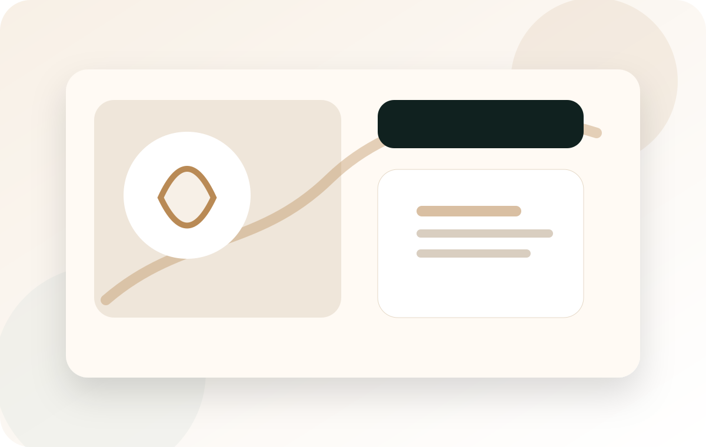
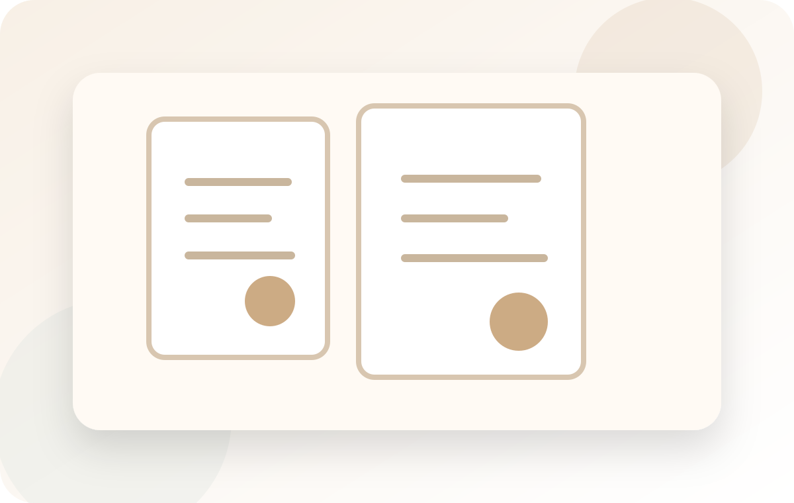
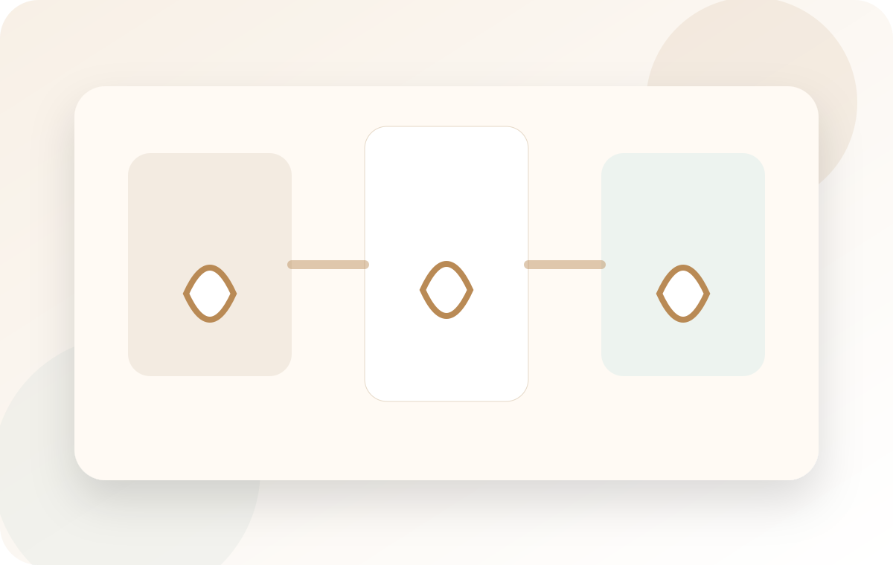
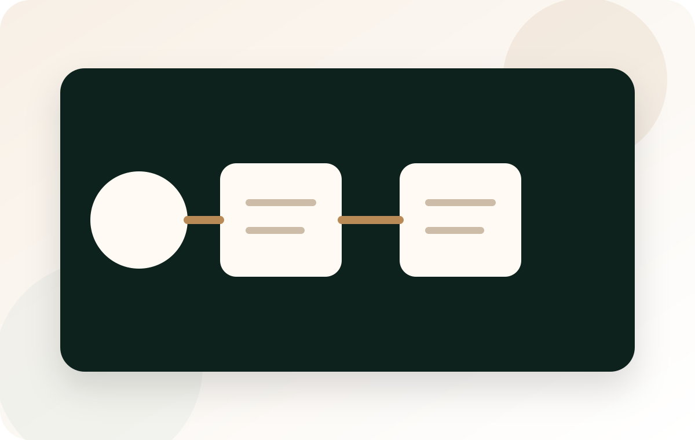

Врачи
Фото и специализации публикуются только после подтверждения клиникой.
Дорогой, спокойный и честный сайт для клиники: реальные врачи и документы после подтверждения, аккуратные кейсы без медицинских обещаний, запись через консультационный путь и Telegram.
Не ставим диагноз онлайн и не обещаем медицинский результат. Сайт показывает сервис, процесс и доверие, а решение принимает врач на консультации.


Фото и специализации публикуются только после подтверждения клиникой.

Документы показываются как проверяемые материалы, без фейковых номеров и бейджей.

Кейсы оформляются как путь пациента и решение задачи, без гарантий результата.
Ассистент уточняет цель обращения, предупреждает о консультации врача и помогает согласовать время с командой клиники.

Выберите консультацию, вопрос в Telegram или знакомство с врачами и документами клиники.